Contents
- Controller synthesis using SReachPoint for a Dubin's vehicle
- Problem formulation: Stochastic reachability of a target tube
- Dubin's vehicle dynamics
- Target tube definition
- Specifying initial states and which options to run
- Quantities needed to compute the optimal mean trajectory
- SReachPoint: chance-open
- SReachPoint: genzps-open
- SReachPoint: particle-open
- SReachPoint: voronoi-open
- SReachPoint: chance-affine
- SReachPoint: chance-affine-uni
- Summary of results
- Bar plot
Controller synthesis using SReachPoint for a Dubin's vehicle
This example will demonstrate the use of SReachTools for the controller synthesis with respect to the stochastic reachability of a target tube. We consider a continuous-state discrete-time linear time-varying (LTV) system. This example script is part of the SReachTools toolbox, which is licensed under GPL v3 or (at your option) any later version. A copy of this license is given in https://github.com/unm-hscl/SReachTools/blob/master/LICENSE.
In this example script, we discuss how to use SReachPoint to synthesize open-loop controllers and affine-disturbance feedback controllers such that the system stays within a target tube with maximum likelihood. We demonstrate the following solution techniques:
- chance-open: Chance-constrained approach that uses ris/nonk allocation and piecewise-affine approximations to formulate a linear program to synthesize an open-loop controller (See Vinod and Oishi, Conference in Decision and Control, 2019 (submitted), Lesser et. al., Conference on Decision and Control, 2013)
- genzps-open: Fourier transforms that uses Genz's algorithm to formulate a log-concave optimization problem to be solved using MATLAB's patternsearch to synthesize an open-loop controller (See Vinod and Oishi, Control System Society- Letters, 2017)
- particle-open: Particle control filter approach that formulates a mixed-integer linear program to synthesize an open-loop controller (See Lesser et. al., Conference on Decision and Control, 2013)
- voronoi-open: Particle control filter approach that formulates a mixed-integer linear program to synthesize an open-loop controller. In contrast to particle-open, voronoi-open permits a user-specified upper bound on the overapproximation error in the maximal reach probability and has significant computational advantages due to its undersampling approach. (See Sartipizadeh et. al., American Control Conference, 2019 (accepted))
- chance-affine: Chance-constrained approach that uses risk allocation and piecewise-affine approximations to formulate a difference-of-convex program to synthesize a closed-loop (affine disturbance feedback) controller. The controller synthesis is done by solving a series of second-order cone programs. (See Vinod and Oishi, Conference in Decision and Control, 2019 (submitted))
- chance-affine-uni: Chance-constrained approach that uses uniform risk allocation to synthesize a closed-loop (affine disturbance feedback) controller. The controller synthesis is done by solving a series of second-order cone programs. (See Vinod and Oishi, Conference in Decision and Control, 2019 (submitted))
All computations were performed using MATLAB on an Ubuntu OS running on a laptop with Intel i7 CPU with 2.1GHz clock rate and 8 GB RAM. For sake of clarity, all commands were asked to be verbose (via `SReachPointOptions`). In practice, this can be turned off.
% Prescript running: Initializing srtinit, if it already hasn't been initialized close all;clearvars;srtinit;
Problem formulation: Stochastic reachability of a target tube
Given an initial state 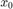, a time horizon  , a linear system dynamics 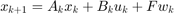 for 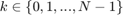, and a target tube 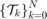, we wish to design an admissible controller that maximizes the probability of the state staying with the target tube. This maximal reach probability, denoted by 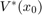, is obtained by solving the following optimization problem
, a linear system dynamics 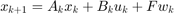 for 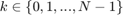, and a target tube 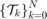, we wish to design an admissible controller that maximizes the probability of the state staying with the target tube. This maximal reach probability, denoted by 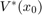, is obtained by solving the following optimization problem
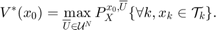
Here, 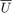 refers to the control policy which satisfies the control bounds specified by the input space 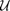 over the entire time horizon , ![$X= {[x_1\ x_2\ \ldots\ x_N]}^\top$](dubinsSReachPointGauss_eq11126846126939553872.png) is the concatenated state vector, and the target tube is a sequence of sets . Here, 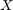 is a random vector with probability measure 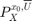 which is a parameterized by the initial state and policy .
is the concatenated state vector, and the target tube is a sequence of sets . Here, 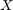 is a random vector with probability measure 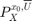 which is a parameterized by the initial state and policy .
In the general formulation requires is given by a sequence of (potentially time-varying and nonlinear) state-feedback controllers. To compute such a policy, we have to resort to dynamic programming which suffers from the curse of dimensionality. See these papers for details Abate et. al, Automatica, 2008, Summers and Lygeros, Automatica, 2010, and Vinod and Oishi, IEEE Trans. Automatic Control, 2018 (submitted).
SReachPoint provides multiple ways to compute an underapproximation of by restricting the search to the following controllers:
- open-loop controller: The controller provides a sequence of control actions 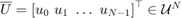 parameterized only by the initial state. This controller does not account for the actual state realization and therefore can be conservative. However, computing this control sequence is easy due to known convexity properties of the problem. See Vinod and Oishi, IEEE Trans. Automatic Control, 2018 (submitted) for more details. Apart from particle-open, all approaches provide guaranteed underapproximations or underapproximations to a user-specifed error.
- affine-disturbance feedback controller: The controller is a characterized by an affine transformation of the concatenated disturbance vector. The gain matrix is forced to be lower-triangular for the causality, resulting in the control action at 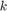 be dependent only the past disturbance values. Here, the control action at time
 is given by 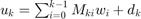. We optimize for 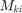 and
is given by 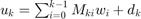. We optimize for 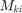 and  for every
for every  , and the controller is given by 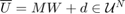, with 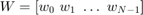 denoting the concatenated disturbance random vector. By construction, is now random, and it can not satisfy hard control bounds with non-zero and unbounded 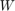. Therefore, we relax the control bound constraints
, and the controller is given by 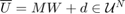, with 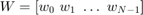 denoting the concatenated disturbance random vector. By construction, is now random, and it can not satisfy hard control bounds with non-zero and unbounded 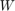. Therefore, we relax the control bound constraints  to a chance constraint, 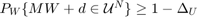 permitting the user to specify the probabilistic violation
to a chance constraint, 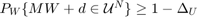 permitting the user to specify the probabilistic violation  of the control bounds. We then construct a lower bound for the maximal reach probability when the affine disturbance feedback controller is used under saturation to meet the hard control bounds. In contrast to the open-loop controller synthesis, affine disturbance feedback controller synthesis is a non-convex problem, and we obtain a locally optimal solution using difference-of-convex programming. See Vinod and Oishi, Hybrid Systems: Computation and Control, 2019 (submitted) for more details.
of the control bounds. We then construct a lower bound for the maximal reach probability when the affine disturbance feedback controller is used under saturation to meet the hard control bounds. In contrast to the open-loop controller synthesis, affine disturbance feedback controller synthesis is a non-convex problem, and we obtain a locally optimal solution using difference-of-convex programming. See Vinod and Oishi, Hybrid Systems: Computation and Control, 2019 (submitted) for more details.
All of our approaches are grid-free resulting in highly scalable solutions, especially for Gaussian-perturbed linear systems.
In this example, we perform controller synthesis that maximizes the probability of a Dubin's vehicle to stay within a time-varying collection of target sets. We model the Dubin's vehicle with known turning rate sequence as a linear time-varying system.
Dubin's vehicle dynamics
We consider a Dubin's vehicle with known turning rate sequence 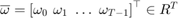, with additive Gaussian disturbance. Specifically, we consider  and set the turning rate to
and set the turning rate to  for the first half of the time interval, and 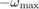 for the rest of the time interval. Here,
for the first half of the time interval, and 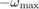 for the rest of the time interval. Here,  is the sampling time. The resulting dynamics are,
is the sampling time. The resulting dynamics are,
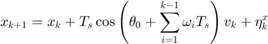
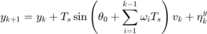
where  are the positions (state) of the Dubin's vehicle in 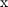- and
are the positions (state) of the Dubin's vehicle in 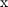- and  - axes,
- axes,  is the velocity of the vehicle (input), 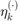 is the additive Gaussian disturbance affecting the dynamics, and 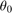 is the initial heading direction. We define the disturbance as 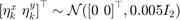.
is the velocity of the vehicle (input), 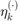 is the additive Gaussian disturbance affecting the dynamics, and 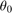 is the initial heading direction. We define the disturbance as 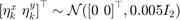.
n_mcarlo_sims = 1e5; % Monte-Carlo simulation particles n_mcarlo_sims_affine = 1e3; % For affine controllers sampling_time = 0.1; % Sampling time init_heading = pi/10; % Initial heading % Known turning rate sequence time_horizon = 50; omega = pi/time_horizon/sampling_time; turning_rate = omega*ones(time_horizon,1); % Input space definition umax = 10; input_space = Polyhedron('lb',0,'ub',umax); % Disturbance matrix and random vector definition dist_matrix = eye(2); eta_dist_gauss = RandomVector('Gaussian',zeros(2,1), 0.001 * eye(2)); prob_thresh = 0.9; sys_gauss = getDubinsCarLtv('add-dist', turning_rate, init_heading, ... sampling_time, input_space, dist_matrix, eta_dist_gauss);
Target tube definition
We define the target tube to be a collection of time-varying boxes 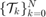 where is the time horizon.
In this problem, we define 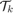 to be centered about the nominal trajectory with fixed velocity of 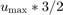 (faster than the maximum velocity allowed) and the heading angle sequence with 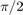 removed. The half-length of these boxes decay exponentially with a time constant which is 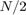.
v_nominal = umax * 2/3; % Nominal trajectory's heading velocity % Construct the nominal trajectory [~,H,~] = sys_gauss.getConcatMats(time_horizon); center_box_X = [zeros(2,1);H * (v_nominal * ones(time_horizon,1))]; center_box = reshape(center_box_X,2,[]); % Box sizes box_halflength_at_0 = 4; % Box half-length at t=0 time_const = 1/2*time_horizon; % Time constant characterize the % exponentially decaying box half-length % Target tube definition as well as plotting target_tube_cell = cell(time_horizon + 1,1); % Vector to store target sets figure(100);clf;hold on for itt = 0:time_horizon % Define the target set at time itt target_tube_cell{itt+1} = Polyhedron(... 'lb',center_box(:, itt+1) -box_halflength_at_0*exp(- itt/time_const),... 'ub', center_box(:, itt+1) + box_halflength_at_0*exp(- itt/time_const)); if itt==0 % Remember the first the tube h_target_tube = plot(target_tube_cell{1},'alpha',0.5,'color','y'); else plot(target_tube_cell{itt+1},'alpha',0.08,'LineStyle',':','color','y'); end end axis equal h_nominal_traj = scatter(center_box(1,:), center_box(2,:), 50,'ks','filled'); h_vec = [h_target_tube, h_nominal_traj]; legend_cell = {'Target tube', 'Nominal trajectory'}; legend(h_vec, legend_cell, 'Location','EastOutside', 'interpreter','latex'); xlabel('x'); ylabel('y'); axis equal box on; grid on; drawnow; % Target tube definition target_tube = Tube(target_tube_cell{:});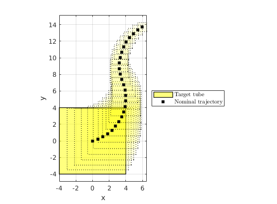
Specifying initial states and which options to run
chance_open_run_gauss = 1; genzps_open_run_gauss = 1; particle_open_run_gauss = 1; voronoi_open_run_gauss = 1; chance_affine_run_gauss = 1; chance_affine_uni_run_gauss = 1; % Initial states for each of the method init_state_open = [-1.5;1.5]; init_state_chance_open_gauss = init_state_open; init_state_genzps_open_gauss = init_state_open; init_state_particle_open_gauss = init_state_open; init_state_voronoi_open_gauss = init_state_open; % init_state_chance_open_gauss = [2;2] + [-1;-1]; % init_state_genzps_open_gauss = [2;2] + [1;-1]; % init_state_particle_open_gauss = [2;2] + [0;1]; % init_state_voronoi_open_gauss = [2;2] + [1.5;1.5]; init_state_affine = init_state_open; %[-2;0]; init_state_chance_affine_gauss = init_state_affine; init_state_chance_affine_uni_gauss = init_state_affine; % init_state_chance_affine_gauss = [2;2] + [2;-1]; % init_state_chance_affine_uni_gauss = [2;2] + [2;-1];
Quantities needed to compute the optimal mean trajectory
We first compute the dynamics of the concatenated state vector 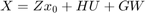, and compute the concatentated random vector and its mean.
[Z,H,G] = sys_gauss.getConcatMats(time_horizon);
% Compute the mean trajectory of the concatenated disturbance vector
muW_gauss = sys_gauss.dist.concat(time_horizon).mean();
SReachPoint: chance-open
This method is discussed in Vinod and Oishi, Hybrid Systems: Computation and Control, 2019 (submitted). It was introduced for stochastic reachability in Lesser et. al., Conference on Decision and Control, 2013.
This approach implements the chance-constrained approach to compute an optimal open-loop controller. It uses risk allocation and piecewise-affine overapproximation of the inverse normal cumulative density function to formulate a linear program for this purpose. Naturally, this is one of the fastest ways to compute an open-loop controller and an underapproximative probabilistic guarantee of safety. However, due to the use of Boole's inequality for risk allocation, it provides a conservative estimate of safety using the open-loop controller.
if chance_open_run_gauss fprintf('\n\nSReachPoint with chance-open\n'); % Set the maximum piecewise-affine overapproximation error to 1e-3 opts = SReachPointOptions('term', 'chance-open', 'pwa_accuracy', 1e-3); timerVal=tic; [prob_chance_open_gauss, opt_input_vec_chance_open_gauss] = SReachPoint('term', ... 'chance-open', sys_gauss, init_state_chance_open_gauss, target_tube, opts); elapsed_time_chance_open_gauss = toc(timerVal); if prob_chance_open_gauss % Optimal mean trajectory construction % mean_X = Z * x_0 + H * U + G * \mu_W opt_mean_X_chance_open_gauss = Z * init_state_chance_open_gauss + ... H * opt_input_vec_chance_open_gauss + G * muW_gauss; opt_mean_traj_chance_open_gauss = reshape(opt_mean_X_chance_open_gauss, ... sys_gauss.state_dim,[]); % Check via Monte-Carlo simulation concat_state_realization = generateMonteCarloSims(n_mcarlo_sims, ... sys_gauss, init_state_chance_open_gauss, time_horizon,... opt_input_vec_chance_open_gauss); mcarlo_result = target_tube.contains(concat_state_realization); simulated_prob_chance_open_gauss = sum(mcarlo_result)/n_mcarlo_sims; else simulated_prob_chance_open_gauss = NaN; end fprintf('SReachPoint underapprox. prob: %1.2f | Simulated prob: %1.2f\n',... prob_chance_open_gauss, simulated_prob_chance_open_gauss); fprintf('Computation time: %1.3f\n', elapsed_time_chance_open_gauss); end
SReachPoint with chance-open SReachPoint underapprox. prob: 0.91 | Simulated prob: 0.97 Computation time: 2.497
SReachPoint: genzps-open
This method is discussed in Vinod and Oishi, Control System Society- Letters, 2017.
This approach implements the Fourier transform-based approach to compute an optimal open-loop controller. It uses Genz's algorithm to compute the probability of safety and optimizes the joint chance constraint involved in maximizing this probability. To handle the noisy behaviour of the Genz's algorithm, we rely on MATLAB's patternsearch for the nonlinear optimization. Internally, we use the chance-open to initialize the nonlinear solver. Hence, this approach will return an open-loop controller with safety at least as good as chance-open.
if genzps_open_run_gauss fprintf('\n\nSReachPoint with genzps-open\n'); opts = SReachPointOptions('term', 'genzps-open', ... 'PSoptions',psoptimset('display','iter'),'desired_accuracy', 5e-2); timerVal = tic; [prob_genzps_open_gauss, opt_input_vec_genzps_open_gauss] = ... SReachPoint('term', 'genzps-open', sys_gauss, ... init_state_genzps_open_gauss, target_tube, opts); elapsed_time_genzps_gauss = toc(timerVal); if prob_genzps_open_gauss > 0 % Optimal mean trajectory construction % mean_X = Z * x_0 + H * U + G * \mu_W opt_mean_X_genzps_open_gauss = Z * init_state_genzps_open_gauss + ... H * opt_input_vec_genzps_open_gauss + G * muW_gauss; opt_mean_traj_genzps_open_gauss = reshape( ... opt_mean_X_genzps_open_gauss, sys_gauss.state_dim,[]); % Check via Monte-Carlo simulation concat_state_realization = generateMonteCarloSims(n_mcarlo_sims, ... sys_gauss, init_state_genzps_open_gauss, time_horizon,... opt_input_vec_genzps_open_gauss); mcarlo_result = target_tube.contains(concat_state_realization); simulated_prob_genzps_open_gauss = sum(mcarlo_result)/n_mcarlo_sims; else simulated_prob_genzps_open_gauss = NaN; end fprintf('SReachPoint underapprox. prob: %1.2f | Simulated prob: %1.2f\n',... prob_genzps_open_gauss, simulated_prob_genzps_open_gauss); fprintf('Computation time: %1.3f\n', elapsed_time_genzps_gauss); end
SReachPoint with genzps-open
Iter Func-count f(x) MeshSize Method
0 1 0.0512933 1
1 93 0.0512933 0.5 Refine Mesh
2 185 0.0512933 0.25 Refine Mesh
3 277 0.0512933 0.125 Refine Mesh
4 369 0.0512933 0.0625 Refine Mesh
5 461 0.0512933 0.03125 Refine Mesh
6 553 0.0512933 0.01562 Refine Mesh
7 645 0.0512933 0.007812 Refine Mesh
8 737 0.0512933 0.003906 Refine Mesh
9 829 0.0512933 0.001953 Refine Mesh
10 921 0.0512933 0.0009766 Refine Mesh
11 1021 0.0512933 0.0004883 Refine Mesh
12 1121 0.0512933 0.0002441 Refine Mesh
13 1221 0.0512933 0.0001221 Refine Mesh
14 1321 0.0512933 6.104e-05 Refine Mesh
15 1421 0.0512933 3.052e-05 Refine Mesh
16 1521 0.0512933 1.526e-05 Refine Mesh
17 1621 0.0512933 7.629e-06 Refine Mesh
18 1721 0.0512933 3.815e-06 Refine Mesh
19 1821 0.0512933 1.907e-06 Refine Mesh
20 1921 0.0512933 9.537e-07 Refine Mesh
Optimization terminated: mesh size less than options.MeshTolerance.
SReachPoint underapprox. prob: 0.95 | Simulated prob: 0.97
Computation time: 738.206
SReachPoint: particle-open
This method is discussed in Lesser et. al., Conference on Decision and Control, 2013.
This approach implements the particle control approach to compute an open-loop controller. It is a sampling-based technique and hence the resulting probability estimate is random with its variance going to zero as the number of samples considered goes to infinity. Note that since a mixed-integer linear program is solved underneath with the number of binary variables corresponding to the number of particles, using too many particles can cause an exponential increase in computational time.
if particle_open_run_gauss fprintf('\n\nSReachPoint with particle-open\n'); opts = SReachPointOptions('term','particle-open','verbose',1,... 'n_particles',50); timerVal = tic; [prob_particle_open_gauss, opt_input_vec_particle_open_gauss] = ... SReachPoint('term', 'particle-open', sys_gauss, ... init_state_particle_open_gauss, target_tube, opts); elapsed_time_particle_gauss = toc(timerVal); if prob_particle_open_gauss > 0 % Optimal mean trajectory construction % mean_X = Z * x_0 + H * U + G * \mu_W opt_mean_X_particle_open_gauss = Z * ... init_state_particle_open_gauss + H * ... opt_input_vec_particle_open_gauss + G * muW_gauss; opt_mean_traj_particle_open_gauss =... reshape(opt_mean_X_particle_open_gauss, sys_gauss.state_dim,[]); % Check via Monte-Carlo simulation concat_state_realization = generateMonteCarloSims(n_mcarlo_sims, ... sys_gauss, init_state_particle_open_gauss, time_horizon,... opt_input_vec_particle_open_gauss); mcarlo_result = target_tube.contains(concat_state_realization); simulated_prob_particle_open_gauss = sum(mcarlo_result)/n_mcarlo_sims; else simulated_prob_particle_open_gauss = NaN; end fprintf('SReachPoint approx. prob: %1.2f | Simulated prob: %1.2f\n',... prob_particle_open_gauss, simulated_prob_particle_open_gauss); fprintf('Computation time: %1.3f\n', elapsed_time_particle_gauss); end
SReachPoint with particle-open Required number of particles: 50 Creating random variable realizations....Done Setting up CVX problem....Done Parsing and solving the MILP....Done SReachPoint approx. prob: 1.00 | Simulated prob: 0.90 Computation time: 47.595
SReachPoint: voronoi-open
This method is discussed in Sartipizadeh et. al., American Control Conference, 2019 (submitted)
This approach implements the undersampled particle control approach to compute an open-loop controller. It computes, using k-means, a representative sample realization of the disturbance which is significantly smaller. This drastically improves the computational efficiency of the particle control approach. Further, because it uses Hoeffding's inequality, the user can specify an upper-bound on the overapproximation error. The undersampled probability estimate is used to create a lower bound of the solution corresponding to the original particle control problem with appropriate (typically large) number of particles. Thus, this has all the benefits of the particle-open option, with additional benefits of being able to specify a maximum overapproximation error as well being computationally tractable.
if voronoi_open_run_gauss fprintf('\n\nSReachPoint with voronoi-open\n'); opts = SReachPointOptions('term','voronoi-open','verbose',1,... 'max_overapprox_err', 1e-2); timerVal = tic; [prob_voronoi_open_gauss, opt_input_vec_voronoi_open_gauss] = ... SReachPoint('term', 'voronoi-open', sys_gauss, ... init_state_voronoi_open_gauss, target_tube, opts); elapsed_time_voronoi_gauss = toc(timerVal); if prob_voronoi_open_gauss > 0 % Optimal mean trajectory construction % mean_X = Z * x_0 + H * U + G * \mu_W opt_mean_X_voronoi_open_gauss = Z * init_state_voronoi_open_gauss + ... H * opt_input_vec_voronoi_open_gauss + G * muW_gauss; opt_mean_traj_voronoi_open_gauss =... reshape(opt_mean_X_voronoi_open_gauss, sys_gauss.state_dim,[]); % Check via Monte-Carlo simulation concat_state_realization = generateMonteCarloSims(n_mcarlo_sims, ... sys_gauss, init_state_voronoi_open_gauss,time_horizon,... opt_input_vec_voronoi_open_gauss); mcarlo_result = target_tube.contains(concat_state_realization); simulated_prob_voronoi_open_gauss = sum(mcarlo_result)/n_mcarlo_sims; else simulated_prob_voronoi_open_gauss = NaN; end fprintf('SReachPoint approx. prob: %1.2f | Simulated prob: %1.2f\n',... prob_voronoi_open_gauss, simulated_prob_voronoi_open_gauss); fprintf('Computation time: %1.3f\n', elapsed_time_voronoi_gauss); end
SReachPoint with voronoi-open Required number of particles: 4.6052e+04 | Samples used: 30 Creating random variable realizations....Done Using k-means for undersampling....Done Setting up CVX problem....Done Parsing and solving the MILP....Done Undersampled probability (with 30 particles): 0.442 Underapproximation to the original MILP (with 46052 particles): 0.927 SReachPoint approx. prob: 0.93 | Simulated prob: 0.94 Computation time: 37.369
SReachPoint: chance-affine
This method is discussed in Vinod and Oishi, Hybrid Systems: Computation and Control, 2019 (submitted).
This approach implements the chance-constrained approach to compute a locally optimal affine disturbance feedback controller. In contrast to chance-open, this approach optimizes for an affine feedback gain for the concatenated disturbance vector as well as a bias. The resulting optimization problem is non-convex, and SReachTools formulates a difference-of-convex program to solve this optimization problem to a local optimum. Since affine disturbance feedback controllers can not satisfy hard control bounds, we relax the control bounds to be probabilistically violated with at most a probability of 0.01. After obtaining the affine feedback controller, we compute a lower bound to the maximal reach probability in the event saturation is applied to satisfy the hard control bounds. Due to its incorporation of state-feedback, this approach typically permits the construction of the highest underapproximative probability guarantee.
if chance_affine_run_gauss fprintf('\n\nSReachPoint with chance-affine\n'); opts = SReachPointOptions('term', 'chance-affine',... 'max_input_viol_prob', 1e-2, 'verbose', 2); timerVal = tic; [prob_chance_affine_gauss, opt_input_vec_chance_affine_gauss,... opt_input_gain_chance_affine_gauss] = SReachPoint('term', ... 'chance-affine', sys_gauss, init_state_chance_affine_gauss, ... target_tube, opts); elapsed_time_chance_affine_gauss = toc(timerVal); fprintf('Computation time: %1.3f\n', elapsed_time_chance_affine_gauss); if prob_chance_affine_gauss > 0 % mean_X = Z * x_0 + H * (M \mu_W + d) + G * \mu_W opt_mean_X_chance_affine_gauss = Z * ... init_state_chance_affine_gauss + H * ... opt_input_vec_chance_affine_gauss + ... (H * opt_input_gain_chance_affine_gauss + G) * muW_gauss; % Optimal mean trajectory construction opt_mean_traj_chance_affine_gauss = reshape(... opt_mean_X_chance_affine_gauss, sys_gauss.state_dim,[]); % Check via Monte-Carlo simulation concat_state_realization_cca_gauss = generateMonteCarloSims(... n_mcarlo_sims, sys_gauss, init_state_chance_affine_gauss, ... time_horizon, opt_input_vec_chance_affine_gauss,... opt_input_gain_chance_affine_gauss, 1); mcarlo_result = target_tube.contains(concat_state_realization_cca_gauss); simulated_prob_chance_affine_gauss = sum(mcarlo_result) / n_mcarlo_sims; else simulated_prob_chance_affine_gauss = NaN; end fprintf('SReachPoint underapprox. prob: %1.2f | Simulated prob: %1.2f\n',... prob_chance_affine_gauss, simulated_prob_chance_affine_gauss); fprintf('Computation time: %1.3f\n', elapsed_time_chance_affine_gauss); end
SReachPoint with chance-affine Setting up the CVX problem 0. CVX status: Solved | Max iterations : <200 Current probabilty: 0.010 | tau_iter: 1 DC slack-total sum --- state: 5.31e+03 | input: 3.22e+03 Setting up the CVX problem 1. CVX status: Solved | Max iterations : <200 Current probabilty: 0.975 | tau_iter: 2.000e+00 DC slack-total sum --- state: 1.77e-12 | input: 9.03e-13 | Acceptable: <1.000e-08 DC convergence error: 8.53e+03 | Acceptable: <1.000e-04 Setting up the CVX problem 2. CVX status: Solved | Max iterations : <200 Current probabilty: 0.999 | tau_iter: 4.000e+00 DC slack-total sum --- state: 1.78e-12 | input: 9.20e-13 | Acceptable: <1.000e-08 DC convergence error: 2.38e-02 | Acceptable: <1.000e-04 Setting up the CVX problem 3. CVX status: Solved | Max iterations : <200 Current probabilty: 1.000 | tau_iter: 8.000e+00 DC slack-total sum --- state: 3.96e-12 | input: 2.09e-12 | Acceptable: <1.000e-08 DC convergence error: 9.11e-04 | Acceptable: <1.000e-04 Setting up the CVX problem 4. CVX status: Solved | Max iterations : <200 Current probabilty: 1.000 | tau_iter: 1.600e+01 DC slack-total sum --- state: 2.13e-13 | input: 1.15e-13 | Acceptable: <1.000e-08 DC convergence error: 1.85e-05 | Acceptable: <1.000e-04 Computation time: 825.319 Getting 100000 realizations...Done Computing the reach probability associated with the given controller via 1.00e+05 Monte-Carlo simulation Affine disturbance feedback controller will be saturated to the input space via projection Using Polyhedron/contains to identify realizations that require saturation...Done Input constraint violation probability: 0.0000 We need to saturate 0 realizations. We will provide progress in 5 quantiles. SReachPoint underapprox. prob: 1.00 | Simulated prob: 1.00 Computation time: 825.319
SReachPoint: chance-affine-uni
This method is inspired from Vitus and Tomlin, CDC 2011 paper. It attacks the affine controller synthesis problem using convex optimization by decoupling risk allocation from controller synthesis. A uniform risk allocation is assumed, and a bisection is performed with controller synthesis done for intermediate risk allocations. However, this decoupling might be too conservative, as discussed in Vinod and Oishi, Hybrid Systems: Computation and Control, 2019 (submitted).
if chance_affine_uni_run_gauss fprintf('\n\nSReachPoint with chance-affine-uni\n'); opts = SReachPointOptions('term', 'chance-affine-uni',... 'max_input_viol_prob', 1e-2, 'verbose', 1); timerVal = tic; [prob_chance_affine_uni_gauss, opt_input_vec_chance_affine_uni_gauss,... opt_input_gain_chance_affine_uni_gauss] = SReachPoint('term', ... 'chance-affine-uni', sys_gauss, ... init_state_chance_affine_uni_gauss, target_tube, opts); elapsed_time_chance_affine_uni_gauss = toc(timerVal); fprintf('Computation time: %1.3f\n', elapsed_time_chance_affine_uni_gauss); if prob_chance_affine_uni_gauss > 0 % mean_X = Z * x_0 + H * (M \mu_W + d) + G * \mu_W opt_mean_X_chance_affine_uni_gauss = Z * ... init_state_chance_affine_uni_gauss + H * ... opt_input_vec_chance_affine_uni_gauss + ... (H * opt_input_gain_chance_affine_uni_gauss + G) * muW_gauss; % Optimal mean trajectory construction opt_mean_traj_chance_affine_uni_gauss = reshape(... opt_mean_X_chance_affine_uni_gauss, sys_gauss.state_dim,[]); % Check via Monte-Carlo simulation concat_state_realization_cca_gauss = generateMonteCarloSims(... n_mcarlo_sims, sys_gauss, init_state_chance_affine_uni_gauss, ... time_horizon, opt_input_vec_chance_affine_uni_gauss,... opt_input_gain_chance_affine_uni_gauss, 1); mcarlo_result = target_tube.contains(concat_state_realization_cca_gauss); simulated_prob_chance_affine_uni_gauss = sum(mcarlo_result) / n_mcarlo_sims; else simulated_prob_chance_affine_uni_gauss = NaN; end fprintf('SReachPoint underapprox. prob: %1.2f | Simulated prob: %1.2f\n',... prob_chance_affine_uni_gauss, simulated_prob_chance_affine_uni_gauss); fprintf('Computation time: %1.3f\n', elapsed_time_chance_affine_uni_gauss); end
SReachPoint with chance-affine-uni Safety prob: 0.500, Input viol: 0.005 | CVX status: Solved Safety prob: 0.750, Input viol: 0.005 | CVX status: Solved Safety prob: 0.875, Input viol: 0.005 | CVX status: Solved Safety prob: 0.938, Input viol: 0.005 | CVX status: Solved Safety prob: 0.969, Input viol: 0.005 | CVX status: Solved Safety prob: 0.984, Input viol: 0.005 | CVX status: Solved Safety prob: 0.992, Input viol: 0.005 | CVX status: Solved Safety prob: 0.996, Input viol: 0.005 | CVX status: Solved Safety prob: 0.998, Input viol: 0.005 | CVX status: Solved Safety prob: 0.999, Input viol: 0.005 | CVX status: Solved Computation time: 364.038 Getting 100000 realizations...Done Computing the reach probability associated with the given controller via 1.00e+05 Monte-Carlo simulation Affine disturbance feedback controller will be saturated to the input space via projection Using Polyhedron/contains to identify realizations that require saturation...Done Input constraint violation probability: 0.0000 We need to saturate 0 realizations. We will provide progress in 5 quantiles. SReachPoint underapprox. prob: 1.00 | Simulated prob: 1.00 Computation time: 364.038
Summary of results
For ease of comparison, we list the probability estimates, the Monte-Carlo simulation validations, and the computation times once again. We also plot the mean trajectories.
figure(101); clf; hold on; for itt = 0:time_horizon if itt==0 % Remember the first the tube h_target_tube = plot(target_tube_cell{1},'alpha',0.5,'color','y'); else plot(target_tube_cell{itt+1},'alpha',0.08,'LineStyle',':','color','y'); end end axis equal %h_nominal_traj = scatter(center_box(1,:), center_box(2,:), 50,'ks','filled'); %h_vec = [h_target_tube, h_nominal_traj]; %legend_cell = {'Target tube', 'Nominal trajectory'}; h_vec = h_target_tube; legend_cell = {'Target tube'}; % Plot the optimal mean trajectory from the vertex under study if chance_open_run_gauss h_opt_mean_ccc_gauss = scatter(... [init_state_chance_open_gauss(1), ... opt_mean_traj_chance_open_gauss(1,:)], ... [init_state_chance_open_gauss(2), ... opt_mean_traj_chance_open_gauss(2,:)], ... 30, 'bo', 'filled','DisplayName', 'Mean trajectory (chance-open)'); legend_cell{end+1} = 'Mean trajectory (chance-open)'; h_vec(end+1) = h_opt_mean_ccc_gauss; disp('>>> SReachPoint with chance-open') fprintf('SReachPoint underapprox. prob: %1.2f | Simulated prob: %1.2f\n',... prob_chance_open_gauss, simulated_prob_chance_open_gauss); fprintf('Computation time: %1.3f\n', elapsed_time_chance_open_gauss); end if genzps_open_run_gauss h_opt_mean_genzps_gauss = scatter(... [init_state_genzps_open_gauss(1), ... opt_mean_traj_genzps_open_gauss(1,:)], ... [init_state_genzps_open_gauss(2), ... opt_mean_traj_genzps_open_gauss(2,:)], ... 30, 'kd','DisplayName', 'Mean trajectory (genzps-open)'); legend_cell{end+1} = 'Mean trajectory (genzps-open)'; h_vec(end+1) = h_opt_mean_genzps_gauss; disp('>>> SReachPoint with genzps-open') fprintf('SReachPoint underapprox. prob: %1.2f | Simulated prob: %1.2f\n',... prob_genzps_open_gauss, simulated_prob_genzps_open_gauss); fprintf('Computation time: %1.3f\n', elapsed_time_genzps_gauss); end if particle_open_run_gauss h_opt_mean_particle_gauss = scatter(... [init_state_particle_open_gauss(1), ... opt_mean_traj_particle_open_gauss(1,:)], ... [init_state_particle_open_gauss(2), ... opt_mean_traj_particle_open_gauss(2,:)], ... 30, 'r^', 'filled','DisplayName', 'Mean trajectory (particle-open)'); legend_cell{end+1} = 'Mean trajectory (particle-open)'; h_vec(end+1) = h_opt_mean_particle_gauss; disp('>>> SReachPoint with particle-open') fprintf('SReachPoint approx. prob: %1.2f | Simulated prob: %1.2f\n',... prob_particle_open_gauss, simulated_prob_particle_open_gauss); fprintf('Computation time: %1.3f\n', elapsed_time_particle_gauss); end if voronoi_open_run_gauss h_opt_mean_voronoi_open_gauss = scatter(... [init_state_voronoi_open_gauss(1), ... opt_mean_traj_voronoi_open_gauss(1,:)], ... [init_state_voronoi_open_gauss(2), ... opt_mean_traj_voronoi_open_gauss(2,:)], ... 30, 'cv', 'filled','DisplayName', 'Mean trajectory (voronoi-open)'); legend_cell{end+1} = 'Mean trajectory (voronoi-open)'; h_vec(end+1) = h_opt_mean_voronoi_open_gauss; disp('>>> SReachPoint with voronoi-open') fprintf('SReachPoint approx. prob: %1.2f | Simulated prob: %1.2f\n',... prob_voronoi_open_gauss, simulated_prob_voronoi_open_gauss); fprintf('Computation time: %1.3f\n', elapsed_time_voronoi_gauss); end if chance_affine_run_gauss h_opt_mean_chance_affine_gauss = scatter(... [init_state_chance_affine_gauss(1), ... opt_mean_traj_chance_affine_gauss(1,:)], ... [init_state_chance_affine_gauss(2), ... opt_mean_traj_chance_affine_gauss(2,:)], ... 30, 'ms', 'filled','DisplayName', 'Mean trajectory (chance-affine)'); legend_cell{end+1} = 'Mean trajectory (chance-affine)'; h_vec(end+1) = h_opt_mean_chance_affine_gauss; % polytopesFromMonteCarloSims(... % concat_state_realization_cca_gauss(sys_gauss.state_dim+1:end,:), sys_gauss.state_dim,... % [1,2], {'color','m','edgecolor','m','linewidth',2,'alpha',0.15,'LineStyle',':'}); disp('>>> SReachPoint with chance-affine') fprintf('SReachPoint underapprox. prob: %1.2f | Simulated prob: %1.2f\n',... prob_chance_affine_gauss, simulated_prob_chance_affine_gauss); fprintf('Computation time: %1.3f\n', elapsed_time_chance_affine_gauss); end if chance_affine_uni_run_gauss h_opt_mean_chance_affine_uni_gauss = scatter(... [init_state_chance_affine_uni_gauss(1), ... opt_mean_traj_chance_affine_uni_gauss(1,:)], ... [init_state_chance_affine_uni_gauss(2), ... opt_mean_traj_chance_affine_uni_gauss(2,:)], ... 30, 'ms', 'filled','DisplayName', 'Mean trajectory (chance-affine-uni)'); legend_cell{end+1} = 'Mean trajectory (chance-affine-uni)'; h_vec(end+1) = h_opt_mean_chance_affine_uni_gauss; % polytopesFromMonteCarloSims(... % concat_state_realization_cca_gauss(sys_gauss.state_dim+1:end,:), sys_gauss.state_dim,... % [1,2], {'color','m','edgecolor','m','linewidth',2,'alpha',0.15,'LineStyle',':'}); disp('>>> SReachPoint with chance-affine-uni') fprintf('SReachPoint underapprox. prob: %1.2f | Simulated prob: %1.2f\n',... prob_chance_affine_uni_gauss, simulated_prob_chance_affine_uni_gauss); fprintf('Computation time: %1.3f\n', elapsed_time_chance_affine_uni_gauss); end legend(h_vec, legend_cell, 'Location','EastOutside', 'interpreter','latex'); xlabel('x'); ylabel('y'); axis equal box on; set(gca,'FontSize',20); drawnow;
>>> SReachPoint with chance-open SReachPoint underapprox. prob: 0.91 | Simulated prob: 0.97 Computation time: 2.497 >>> SReachPoint with genzps-open SReachPoint underapprox. prob: 0.95 | Simulated prob: 0.97 Computation time: 738.206 >>> SReachPoint with particle-open SReachPoint approx. prob: 1.00 | Simulated prob: 0.90 Computation time: 47.595 >>> SReachPoint with voronoi-open SReachPoint approx. prob: 0.93 | Simulated prob: 0.94 Computation time: 37.369 >>> SReachPoint with chance-affine SReachPoint underapprox. prob: 1.00 | Simulated prob: 1.00 Computation time: 825.319 >>> SReachPoint with chance-affine-uni SReachPoint underapprox. prob: 1.00 | Simulated prob: 1.00 Computation time: 364.038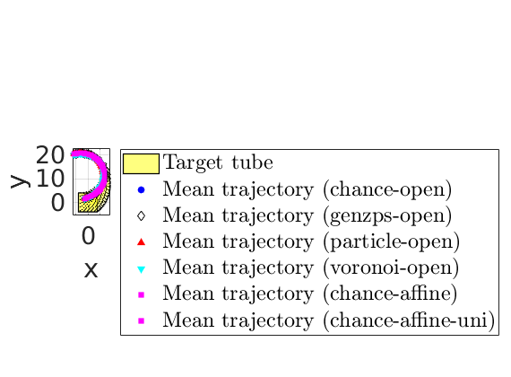
Bar plot
elapsed_time_vec = [elapsed_time_chance_open_gauss;
elapsed_time_genzps_gauss;
elapsed_time_particle_gauss;
elapsed_time_voronoi_gauss;
elapsed_time_chance_affine_uni_gauss;
elapsed_time_chance_affine_gauss];
prob_lb = [prob_chance_open_gauss;
prob_genzps_open_gauss;
prob_particle_open_gauss;
prob_voronoi_open_gauss;
prob_chance_affine_uni_gauss;
prob_chance_affine_gauss];
sim_prob = [simulated_prob_chance_open_gauss;
simulated_prob_genzps_open_gauss;
simulated_prob_particle_open_gauss;
simulated_prob_voronoi_open_gauss;
simulated_prob_chance_affine_uni_gauss;
simulated_prob_chance_affine_gauss];
figure(105);
clf
a=subplot(2,1,1);
bar([prob_lb, sim_prob]);
ylim([0.7 1]);
xticklabels({'chance-open','genzps-open', 'particle-open', 'voronoi-open', 'chance-affine-uni', 'chance-affine'});
yticks(0.7:0.1:1);
ylabel('Reach probability');
set(gca,'FontSize',20);
legend('Estimated', 'Simulated ($10^5$ particles)','interpreter','latex','location','southeast','FontSize',25);
xlimits_sub1 = xlim;
grid on;
box on;
ax = subplot(2,1,2);
hold on;
xvec = xlimits_sub1(1):xlimits_sub1(2)+1;
plot(xvec,10*ones(size(xvec)),'k--')
plot(xvec,60*ones(size(xvec)),'k--')
plot(xvec,600*ones(size(xvec)),'k--')
% text(0.6,85,'1 minute','FontSize',20);
% text(0.6,425,'10 minutes','FontSize',20);
ylabel('Computation time (s)');
bar(elapsed_time_vec,0.4,'k');
set(gca,'YScale','log');
xlim(xlimits_sub1)
xticks(1:6)
xticklabels({'chance-open','genzps-open', 'particle-open', 'voronoi-open', 'chance-affine-uni', 'chance-affine'});
set(gca,'FontSize',20);
grid on;
box on;
ylimits_sub2 = ylim;
yyaxis right;
set(gca,'YScale','log');
ylim(ylimits_sub2);
yticks([10,60,600]);
yticklabels({'10 sec.', '1 min.','10 mins.'});
ax.YAxis(2).Color = 'k';
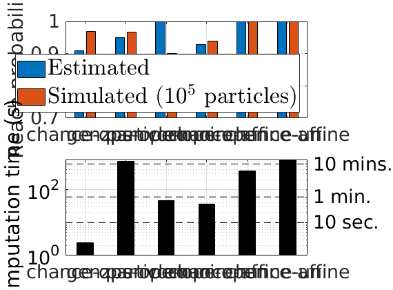